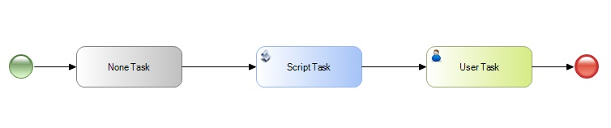

They represent atomic units of work done as part of a business process.
There are three types of tasks:
- None: represents a generic task. This type of activity does not have an associated application; it is automatically executed by the engine and affects neither the relevant workflow data nor the application data.
- Script: are those activities that do not require interaction by the user and will be executed by the Workflow engine.
- User: represents a task executed by a user.
Below are examples of each one of these symbols:
